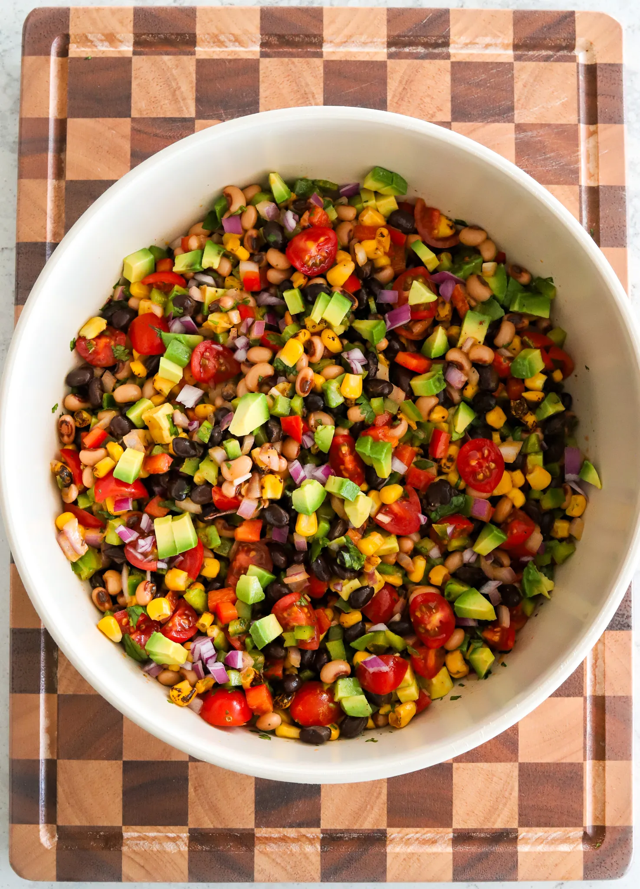

Appetizer | Snack
COWBOY CAVIAR

Cowboy Caviar is like eating the rainbow — colorful,
fresh, and full of flavor in every scoop. It’s packed with fiber and
so good for you, but so yummy you’d never even notice. I love
keeping a batch in the fridge for healthy snacking all week long.
Prep Time: 20 Minutes Total Time: 20 Minutes
Yeilds: 8 Servings
INGREDIENTS
Dressing
- 1/3 cup neutral oil (like avocado oil)
- 3 tablespoons water
- 2 tablespoons honey
- 2 tablespoons apple cider vinegar
- 2 tablespoons chipotle adobo paste
- 1 tablespoon lime juice
- 1 teaspoon yellow mustard
- 1/2 teaspoon salt, adjust to taste
- 1/2 teaspoon paprika
- 1/2 teaspoon black pepper
Veggie Blend
- 15 oz can black eyed peas, drained and rinsed
- 15 oz can black beans, drained and rinsed
- 1 cup yellow sweet corn
- 1 cup grape tomatoes, chopped
- 1 red bell pepper, chopped small
- 1 green bell pepper, chopped small
- 1 jalapeño, seeds and stem removed, finely diced
- 1/2 red onion, chopped small
- 3 to 4 tablespoons cilantro, finely chopped
- 1 large avocado (or 2 small), cubed small
To Serve
- tortilla chips
- salt, to taste
INSTRUCTIONS
-
Make the dressing: Add the oil, water, honey,
apple cider vinegar, chipotle adobo paste, lime juice,
mustard, salt, paprika, and black pepper to a blender
and blend until smooth. You can also use an immersion
blender in a jar, or shake everything together in a
mason jar with a tight lid until emulsified.
-
Prepare the veggie blend: In a large mixing bowl,
combine the black eyed peas, black beans, corn, grape
tomatoes, red bell pepper, green bell pepper, jalapeño,
red onion, and cilantro.
-
Bring it together: Pour the dressing, adding as
little or as much as you like, over the veggie mixture
and gently toss until everything is evenly coated. You
can always add more as you taste and go. I used about 2/3
of the dressing and stored the rest in the fridge in an
air tight container.
-
Add the avocado: If serving right away, fold in the
avocado now. If making ahead, wait until just before serving
to add it so it stays fresh.
-
Serve: Taste and adjust the salt if needed. Serve with
tortilla chips, or chill for 30 minutes before serving to let
the flavors meld.